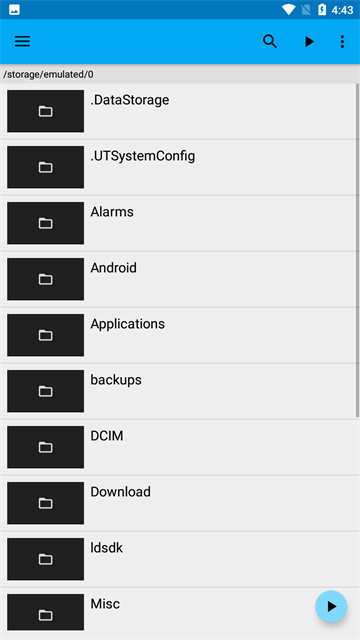
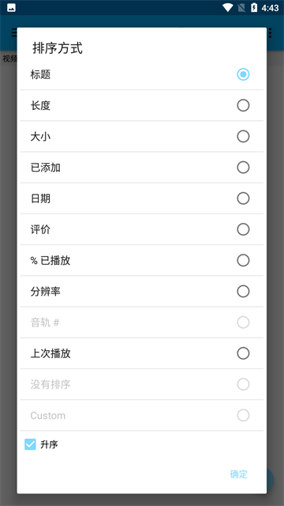

我是怎么用 BSPlayer 把外语片学习效率翻了一倍的
以前看一部外语片要手动调三遍字幕、记一堆笔记，现在一条链走完——从找片到字幕同步到导出生词，全程少了六次手动复制。
旧流程：看一部外语片到底要折腾多久
我每周要啃两部外语片——不是为了消遣，是为了练听力和口语。以前的流程是这样的：
先下片，再找字幕。字幕文件十份里有三份时间戳不对，加载完得用记事本打开 .srt 手动改时间轴——行号一个不能错，改完保存回来再试，不对再改。好不容易对上了，想学两句地道表达，得暂停、切到浏览器查词、复制到 Excel 生词表、切回来继续。一部两个小时的电影，看完加上整理生词，少说四个半小时。
卡壳的地方有三个：字幕同步靠手改、生词收集靠来回切窗口、看完的字幕文件下次换台电脑又得从头调偏移。
我试过几个播放器——有的双字幕要装插件还收费，有的字幕同步只能正调不能粗调，有的根本不保存偏移量。直到用上了 BSPlayer，它的官网上功能说明写得很清楚。
新流程：把 BSPlayer 插进我的学习链
现在我的外语片学习工作流是这样一条线：先从官方下载装好 BSPlayer，然后下片 → 自动匹配字幕 → BSPlayer 实时微调同步 → 双字幕对照观看 → 生词直接标记 → 生词表自动同步到笔记软件。BSPlayer 卡在中间两个关键环节——字幕同步和双字幕叠加。
上下游的配合很简单，都是我日常在用的工具：下载器用迅雷或 qBittorrent，笔记用飞书文档，生词表最终汇总到一个 Excel 文件里。BSPlayer 不直接跟飞书联动，但它输出的字幕文件本身就是一条纽带。
环节一：字幕同步——从手改成按键
这是省时间最多的一步。以前要手动改 .srt 里的毫秒时间戳，现在 BSPlayer 直接在播放中调——快捷键表在BSPlayer文档里有完整清单——Ctrl + 左右方向键 微调 50 毫秒，Ctrl + Shift + 左右方向键 粗调 500 毫秒。屏幕右上角实时弹出当前偏移量，比如「Subtitle: +250ms」——意思是字幕往后推迟了 250 毫秒。
调完按一下「字幕 → 字幕时间偏移 → 保存」，BSPlayer 把偏移量记在和视频同名的配置文件里。下次打开同一部片子直接生效，不用再调。这个设计比直接改字幕文件好——同一份字幕在不同剪辑版本的视频上偏移量可能不一样，BSPlayer 分别记住各自的设置，字幕源文件干干净净不动。
环节二：双字幕叠加——从切窗口到同时看
加载完第一份字幕（英文 .srt），再点「字幕 → 加载字幕（作为第二字幕）」选中文 .srt。屏幕上同时出现两条字幕——默认第一字幕在底部靠上，第二字幕在更靠下的位置。如果位置重叠或者不顺眼，分别调每个字幕的垂直位置就行。

这比我之前用的任何播放器都省心。有的播放器双字幕要分别开两个实例然后窗口分屏，有的不支持加载第二字幕只能内嵌双轨道。BSPlayer 原生支持，零配置。
环节三：生词收集——从复制粘贴到直接标注
看片时遇到不认识的词，我按一下 BS.ControlBar 的「跳转时间」记住当前时间点，继续往下看。看完之后打开字幕文件，按时间点定位到那一行，把生词和上下文句子复制到 Excel。这里没有自动化工具——但因为字幕是已经同步好的 .srt 文件，定位就是 Ctrl+F 找时间戳，比以前在浏览器里翻视频评论找台词快得多。
环节四：生词表同步——一条命令的事
Excel 生词表我每天晚上用 PowerShell 跑个小脚本，自动追加到飞书文档的学习笔记里。这步跟 BSPlayer 没关系，但整个链条因为前面三步省了时间，我有精力每天跑一遍而不是攒到周末。
实操里最容易断链的两个环节
上面说的流程听起来顺，但实际跑起来有两个地方容易卡住。
第一个断链点：字幕文件编码
有时候加载字幕显示全是乱码——这是编码不匹配。英文系统下 BSPlayer 默认按 UTF-8 读，中文简体字幕很多是 GBK 或 GB2312 编码。解决方法有两个：要么手动加载时在文件选择框里选对编码，要么用 Notepad++ 打开字幕文件另存为 UTF-8。
我现在的做法是写了个 5 行的 Python 小脚本放在下载目录里，下完字幕自动批量转 UTF-8，不用每次手动处理。这步脚本是整个流程里唯一的额外工具，但写一次受用一辈子。
第二个断链点：自动搜字幕太泛
BSPlayer 的自动搜字幕功能按文件名或哈希值匹配。如果你的视频文件叫 movie.mkv 或者 download.mkv，自动匹配几乎不可能成功。解决方法是在 BS.ControlBar 的搜索框里手动输入电影英文名加语言限定词，比如 Inception zh，精准度立刻上来。

我习惯在下片的时候把视频文件名改成电影的英文原名加年份，比如 Inception.2010.mkv，这样自动搜字幕成功率基本在九成以上。这是从源头解决，比每次手动搜省事。
效果和边界
跑了两个月，统计了一下：以前一部片子四个半小时，现在两个半小时。省下来的两个小时里，一次字幕同步从手改的四十分钟缩到按键的两分钟，生词收集从来回切窗口的二十分钟缩到直接从字幕文件定位的五分钟。少了六次手动复制，省下了近两小时。
但这套流程也不是万能的。BSPlayer 的媒体库功能我基本不用——它不自动抓取封面和元数据，也不自动分类，界面朴素得像 Windows 资源管理器。我试过扫描全盘电影文件夹，扫了二十分钟出来的结果还是按原始目录排列，跟直接开资源管理器没区别。如果真要做全盘媒体管理，专门的工具比如 Kodi 或 Emby 更合适。BSPlayer 的媒体库对我来说就是偶尔快速找文件的辅助工具，不是核心环节。
还有一个边界：如果字幕时间戳不是整体偏移而是逐帧漂移（比如 24fps 的字幕配了 25fps 的视频），BSPlayer 没有直接调字幕速度的功能。这种情况只能用文本编辑器批量改时间戳或者换一份匹配帧率的字幕。我目前还没遇到过这种极端情况，所以暂时没有对应的脚本。
这套流程什么时候不划算
如果你只是偶尔看一部片放松，或者看的是自带内嵌字幕的流媒体平台内容——别折腾。我这套流程是给每周稳定产出的场景设计的，下片、调字幕、记生词这三步都是重复劳动，重复劳动才有自动化的价值。偶尔看片，花在搭流程上的时间比省下的还多。
另外，如果你已经在用专门的语言学习播放器（比如 LingQ 或 Language Reactor），那些工具的交互设计就是冲着学外语做的，BSPlayer 拼不过。我的定位是已经在用 BSPlayer 做主力播放器的人——不想再装第二个播放器，就想在现有基础上把字幕工作流理顺。这时候 BSPlayer 的双字幕和实时同步就是你需要的功能。
安装包更新频率不高但够用，不折腾。进阶用法比如字幕偏移保存、RAR 包里直接读字幕文件这些细节，有些在它的资料里有专门的章节讲各种字幕格式的兼容情况和快捷键表。它的 APK 我同步维护在三个代码托管平台，GitHub 是主仓库，国内访问可以走Gitee 或GitCode 的镜像。